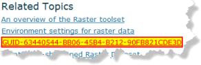

Function3
This is the summary for our third function. I have added this sentence to test conref following.
Quisque leo augue,  hendrerit quis aliquam at, adipiscing ut ligula.
 | Note: |
Default note, with one paragraph. |
This is a paragraph with a draft- comment in the middle.
 | Tip: |
Tip note, first paragraph. Second paragraph of tip note, with italics. |
This is a paragraph that starts with one word in bold, and has a word in italics in the middle. It also has special characters that could be interpreted as <b>bold text</b>.
Here is a paragraph with an unordered bullet list.
- List item one.
- List item two. has italics at the end.
- List item three has bold in the middle.
The paragraph AFTER this one is all a conref about LAS datasets.
Is it possible to conref something smaller -
- .bil—Esri BIL
- .bip—Esri BIP
- .bsq—Esri BSQ
- .dat—ENVI DAT
- .img—ERDAS IMAGINE
- .png—PNG
- .tif—TIFF
When a LAS dataset is specified as input, all the data points in the LAS files it references will be processed.
Here is a video link test MP4 file _downloaded_ from video.arcgis.com (not hosted there). Some text after the link.
This paragraph contains an <xref> to a javascript page on help.arcgis.com.
Here is an example of a simple external xref pointing to videos.arcgis.com. In this case, I copied only the URL from the embed string.
For a more robust solution lets try using an external xref, but change the otherprops attribute to include all the frameborder, width, and so forth. If the otherprops attribute is set, we will presume that we want it in an iframe. If that isn't specific enough, we can check the otherprops attribute for the presence of the string "frameborder". For , that was an embeded video using otherprops.
Parameter One
Four score and seven years ago, within 7 leagues of the shores of Atlantis, someone used an
esri_fieldname and an
esri_path, to create an
esri_wintitle.
Paragraph two has two hogsheads of it. This sentence has
esri_usertext in it.
Parameter Two
Some parameter description text, followed by an esri_enumtable.
- CHOICEONE — Text for choice one. Second paragaraph for choice one, with some bold in it.
- CHOICETWO — Text for choice two